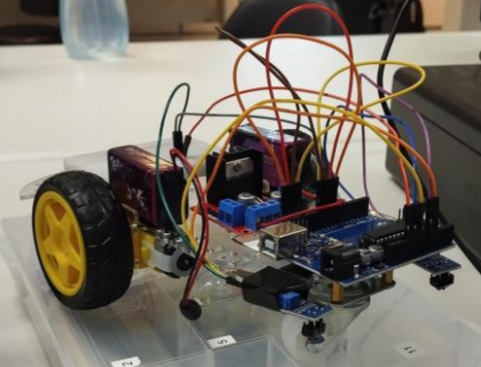
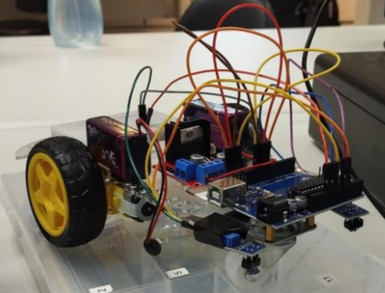
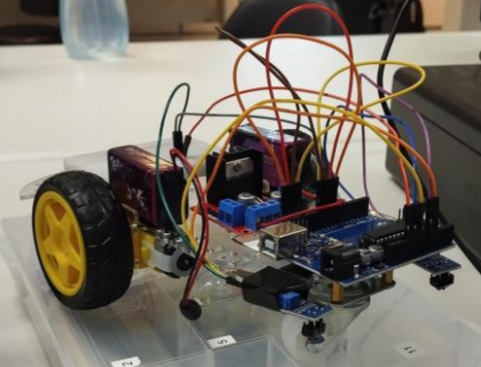

Galeria de Imagens

 

O curso de Internet das Coisas é um curso relativamente novo no Senac e de uma área muito recente do mundo da técnologia confira o video e descubra tudo o que o Senac tem a oferecer com esse curso incrivel, confira a estrutura, materiais utilizados, kits, entre muitas outras coisas.
Esse projeto nos foi dado e precisavamos confeccionar uma lampada que ativasse quando um movimento fosse feito na frente dela, assim como lampadas de corredor, nós fizemos um sistema minimalista que ao presenciar um movimento em frente ao sensor, emite um sinal que manda ativar a lampada, foi um projeto bem interessante que prova que os sistemas de arduino são muito mais presentes no dia a dia do que pensamos.
Esse projeto foi feito por nós, e é um carrinho de arduino que segue uma linha preta no chão, fizemos usando o kit de arduinos! O carrinho tem um interruptor que quando ativado procura com os sensores de reflexão de luz uma superficie que não reflita tanto, assim esse sensor detecta a fita e ativa os motores das rodas conforme a necessidade, ele é capaz de dar curvas e fazer movimentos até que complexos.

Fizemos um sistema muito versátil que pode se assemelhar a um sensor de proximidade de um carro, colocamos no boné um sistema de arduino com sensores de proximidade e conforme a distancia esses sensores mudavam as cores e caso a luz ficasse vermelha ele emitia um som agudo para alertar o usuário do possivel perigo.